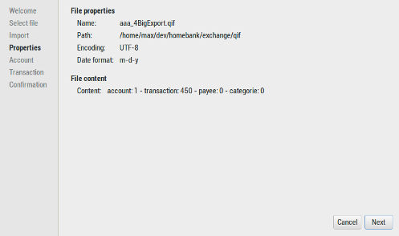
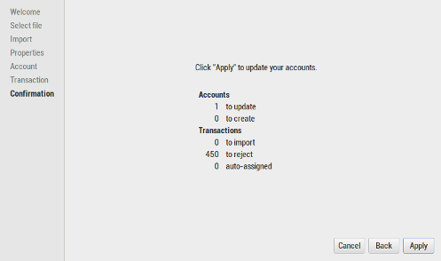

HomeBank is able to import files downloaded from your Bank institution, and also files coming from various personal accounting software, like Money, Quicken, GnuCash, in the supported file format.
From the main window:
Here you select a single file to import. HomeBank will position the filter to the format you just chosen from the menu.
|
When you have not selected a file, or the file is not supported: |
When the file is supported: |
The following steps will only be displayed when you need to validate or confirm an action or a configuration.
This step is never showed, until you use the back button, as HomeBank will go to the step you need to change or check things
A summary of the file currently in the import process is showed with a count of accounts, transactions, payees and categories.
When you import a QIF/CSV file, HomeBank will try to import date with the format order configured into the preferences, and it will try to detect it otherwise. If something went wrong with the date, please adjust the preferences settings to match the file date format order you usually import.
Here you will control the accounts and how to import it.
Depending on the file format, HomeBank will try to match the account by its number or its name.
For QIF: the match will be done by the account name
For OFX: by account number, HomeBank try to find the OFX number as a substring of an account number.
For CSV: a default account will be created.
However, for some QIF files, or any CSV files, there is no information that will permit to identify the account to import, so you will need to manage this manually.
Here you will control the transactions to be imported.
HomeBank will detect if a transaction in the current import file already exists into the target account, and if so will disable it for import and show a warning icon.
Detail of existing transaction section will show the transaction suspected to already exists and them let you choose what to do.
You can also change the detection parameters and refresh that list.
The detection of existing transaction is done in the following order, according to the date tolerance (default is 0 days).

At last show the synthesis of what is to be imported and requires a last confirmation.
The number of accounts to update / create.
The number of transaction to be imported, rejected and the one for which automatic assignment was done for payee and/or category.